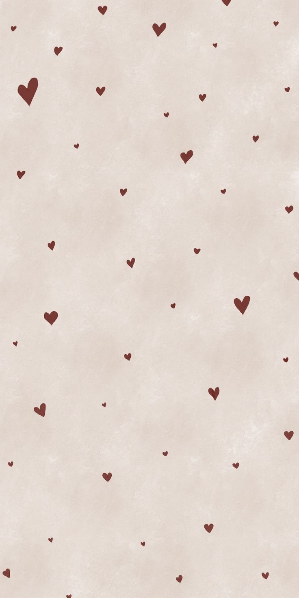

May this help you.💓

Hey,
Agar tum ye padh rahi ho, shayad tumhara din accha nahi gaya hoga, ya shayad tum thoda udaas feel
kar rahi hogi. Isliye main bas tumhe kuch baatein batana chahta hoon jo shayad main har baar bol
nahi pata.
Tumhe pata hai, main apne din ka kitna hissa tumhare baare me sochte hue nikal deta hoon? Kabhi kisi
random baat par, kabhi kisi memory par, aur kabhi bina kisi wajah ke bas tumhari yaad aa jaati hai.
Jab tumse baat nahi hoti, main bahar se normal dikhne ki koshish karta hoon, lekin andar se ek ajeeb
si bechaini rehti hai. Aisa lagta hai jaise din to nikal raha hai, par usme kuch missing hai. Main
khud ko samjhata hoon ki sab theek hai, bas thoda aur intezar karna hai, bas kuch aur din sambhalna
hai.
Sach kahun to mujhe tumhare kho jaane ka dar bhi rehta hai. Dar lagta hai ki kahin tumhe kuch ho na
jaye, kahin tum udaas na ho, kahin tum akeli feel na karo. Shayad isliye kyunki tum meri zindagi ka
itna important hissa ban chuki ho ki tumhari khushi aur tumhari takleef dono mujhe affect karti
hain.
Aur haan, main hamesha strong nahi hota. Kabhi kabhi tumhari yaad me udaas bhi ho jata hoon. Kabhi
kabhi itna miss karta hoon ki bas tumse baat karne ka mann karta rehta hai. Lekin phir main khud ko
samjhata hoon ki ek din sab theek hoga, aur tab tak mujhe aur tumhe dono ko apne sapno ke liye
mehnat karni hai.
Main bas itna chahta hoon ki tum ye yaad rakho:
Tum akeli nahi ho. mein hu tumhare sath hamesha rahunga. here's a virtual hug form me 🫂🫂.I know
things get hard sometimes, but you're stronger than you think.🫂💓✨
Chahe din kitna bhi mushkil ho, chahe tum kitni bhi udaas ho, koi hai jo tumhari fikr karta hai,
tumhari khushi ki dua karta hai, aur tumhe dekh kar khud khush ho jata hai.
Aur ek baat jo shayad main hazaar baar bhi bolun to kam lagegi...
I love you.
Aur jitna waqt beet raha hai, utna hi zyada.